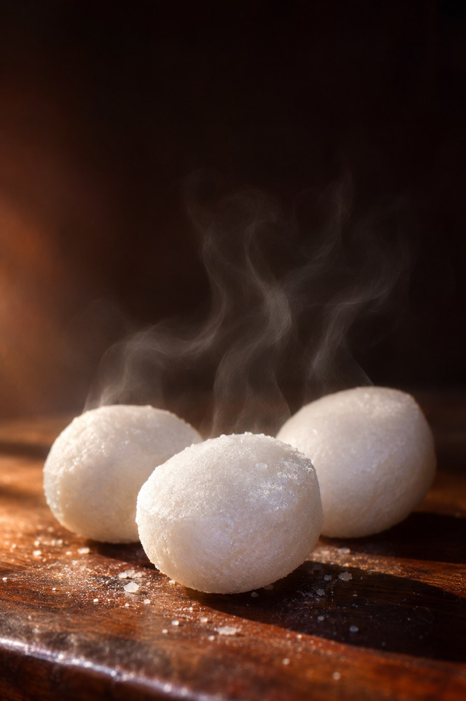
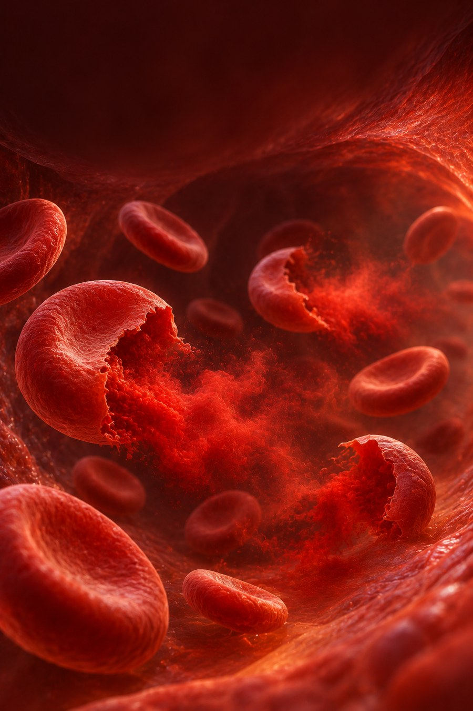
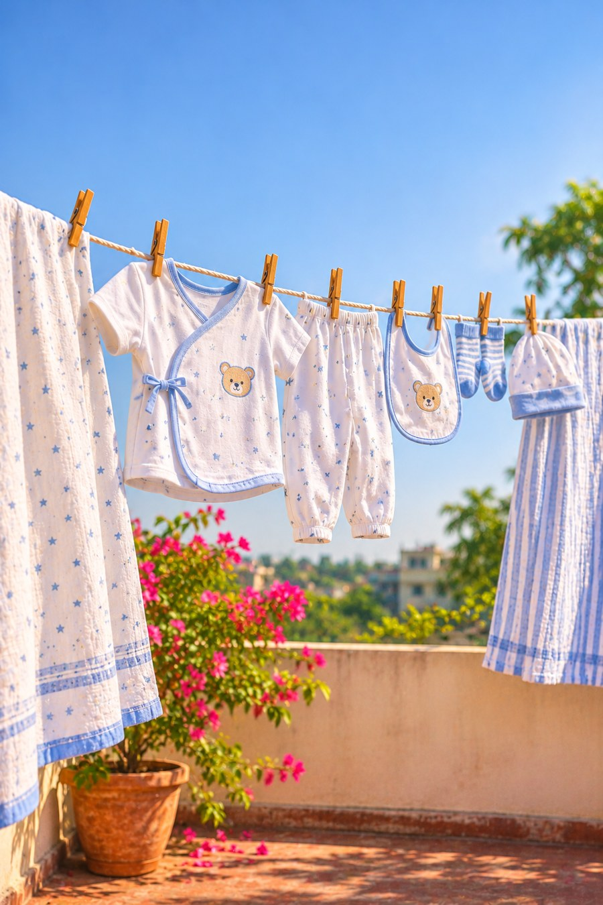
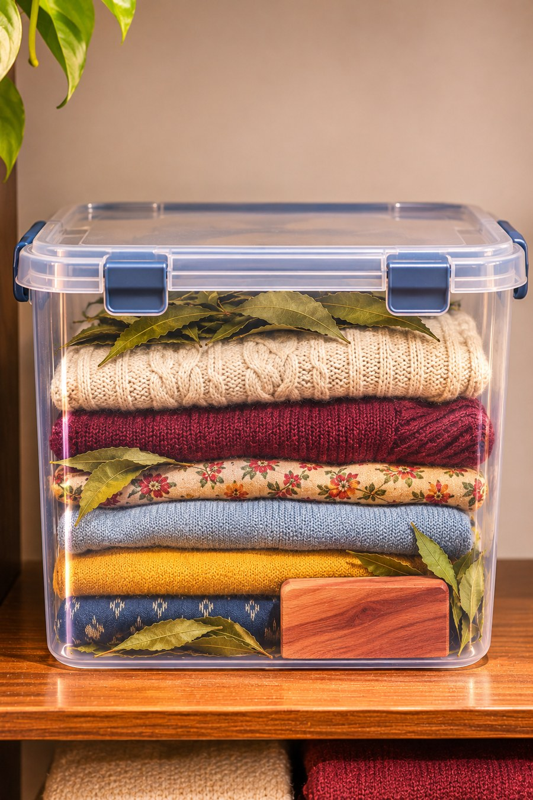

@abhigyanjainmbbs · Free notesAbhigyan Jain · MBBS student
Naphthalene balls (कपूर जैसी सफ़ेद गोलियाँ): complete notes — for everyone + MBBS exam level
NAPHTHALENE BALLS
The mothball that attacks red blood cells
MYTH"They just smell. They are harmless."
They shrink because they turn straight from solid into gas (sublimation). Whatever disappears from the ball is now in the air of your cupboard — and in your lungs.
FACTNaphthalene is an oxidant poison for red blood cells (RBCs).
It can cause haemolysis (RBCs bursting) and methaemoglobinaemia. Newborns and people with G6PD deficiency are at highest risk.

Mothballs sublimate: the solid becomes vapour you breathe.
Naphthalene in 30 seconds
- What it is: an aromatic hydrocarbon (two fused benzene rings) made from coal tar / petroleum. Naphthalene mothballs are almost pure naphthalene.
- Routes of exposure: inhalation of vapour, skin contact (clothes, blankets, nappies stored with mothballs), and ingestion (children mistaking them for sweets).
- Mechanism: the liver converts it to oxidant metabolites (α-naphthol, naphthoquinones) → these use up glutathione, the RBC's antioxidant shield → oxidative damage to haemoglobin and the RBC membrane.
- Result: acute haemolytic anaemia, methaemoglobinaemia, haemoglobinuria (cola-coloured urine), jaundice, and possible acute kidney injury.
- Highest risk: newborns (immature liver conjugation + blood–brain barrier) and anyone with G6PD deficiency (~400 million people worldwide).
- Regulation: the European Union banned naphthalene mothballs in 2008; New Zealand banned mothball distribution in 2014; Australia restricts the forms sold. IARC classifies naphthalene as Group 2B — possibly carcinogenic to humans.
IF A CHILD SWALLOWS ONEDo not make the child vomit. Take the packet/ball with you and go to a hospital immediately. Lethal dose is reported as low as 2–3 g in children (about one standard mothball).
Educational content only · not medical advicePage 1 of 6
@abhigyanjainmbbs · Free notesNaphthalene · page 2
How the damage actually happens
Step by step
1
Sublimation. Solid naphthalene goes directly to vapour at room temperature. A closed almirah or trunk concentrates it.
2
Absorption. Through lungs, through skin (especially from fabric stored with mothballs), or by swallowing.
3
Hepatic metabolism. Cytochrome P450 → naphthalene epoxide → 1-naphthol, 2-naphthol, 1,2- and 1,4-naphthoquinone: strong oxidants.
4
Glutathione depletion. RBCs have no nucleus and no mitochondria; their only antioxidant route is NADPH → reduced glutathione (GSH), made by the hexose monophosphate (pentose phosphate) shunt.
5
Oxidative damage. Haemoglobin is oxidised → Heinz bodies (denatured Hb) attach to the membrane; the spleen bites them out → bite cells → intravascular and extravascular haemolysis.
6
Methaemoglobin. Haem iron is oxidised from Fe²⁺ (ferrous) to Fe³⁺ (ferric). Methaemoglobin cannot carry oxygen → cyanosis that does not improve with oxygen.
7
Kidney load. Free haemoglobin is filtered → pigment nephropathy → acute kidney injury.

Haemolysis: RBCs rupture and release haemoglobin into plasma.
EXAM NOTEG6PD deficiency — X-linked recessive; the commonest human enzymopathy (~400 million people). G6PD is the rate-limiting enzyme of the HMP shunt → less NADPH → less reduced glutathione → RBCs cannot handle oxidant stress.
Classic oxidant triggers: fava beans, naphthalene, primaquine/chloroquine, dapsone, nitrofurantoin, sulfonamides, methylene blue, and infection.
Blood film: bite cells, blister cells, Heinz bodies (supravital stain, e.g. crystal violet).
Caution: enzyme levels can look falsely normal during an acute haemolytic crisis (young reticulocytes are G6PD-rich) — retest after 2–3 months.
Why newborns are the most vulnerable
- Immature hepatic glucuronyl transferase → bilirubin is cleared slowly.
- Higher haematocrit, shorter RBC lifespan, and lower glutathione reserves.
- A permeable blood–brain barrier → unconjugated bilirubin can reach the basal ganglia → kernicterus (permanent brain damage).
- Classic story: baby clothes, nappies or blankets stored for months in a trunk with mothballs, then put on the newborn without washing.
Educational content only · not medical advicePage 2 of 6
@abhigyanjainmbbs · Free notesNaphthalene · page 3
Signs and symptoms
| System | What is seen |
|---|
| General | Headache, giddiness, weakness, fever, sweating, confusion, lethargy. |
| Gastrointestinal | Nausea, vomiting, abdominal pain, diarrhoea; mothball odour on breath. |
| Blood (haemolysis) | Pallor, jaundice (yellow eyes/skin), tiredness, breathlessness, fast heart rate; typically 24–72 hours after exposure. |
| Methaemoglobinaemia | Blue-grey lips and nail beds, chocolate-brown blood, low SpO₂ that does not rise with oxygen ("saturation gap"). |
| Kidney | Cola / dark brown urine (haemoglobinuria), reduced urine output, rising urea and creatinine. |
| Eyes (chronic) | Cataract and optic neuritis described with long-term exposure. |
| Newborn | Deepening jaundice within hours, poor feeding, lethargy, high-pitched cry, arching (kernicterus). |
TIMINGHaemolysis usually appears 1–3 days after a significant exposure, so a child can look well at first. Dark urine 3–5 days later is a classic late sign.
Investigations (what a doctor will order)
- Complete blood count, reticulocyte count, peripheral smear (bite cells, Heinz bodies, spherocytes).
- LDH ↑, indirect (unconjugated) bilirubin ↑, haptoglobin ↓ — the haemolysis panel.
- Direct Coombs test (usually negative — this is non-immune haemolysis).
- Urine: haemoglobinuria, urobilinogen.
- Methaemoglobin level by co-oximetry; arterial blood gas shows normal PaO₂ with low measured saturation.
- Renal function, electrolytes; G6PD assay (repeat after recovery).
- In a newborn: serial total and direct bilirubin, blood group and Coombs, and plot on the age-specific bilirubin nomogram.
Educational content only · not medical advicePage 3 of 6
@abhigyanjainmbbs · Free notesNaphthalene · page 4
Treatment (hospital management — for understanding, not self-treatment)
1. Decontaminate
- Remove the source; take off contaminated clothing; wash skin with soap and water.
- Do not induce vomiting. Milk and fatty foods are avoided — fat increases absorption.
- Activated charcoal only if given early and the airway is protected (decided by the treating doctor).
2. Support
- Oxygen, IV fluids to maintain urine output and protect the kidneys.
- Monitor haemoglobin, urine colour and output, bilirubin and renal function.
- Blood transfusion if haemolysis is severe; exchange transfusion in a severely affected newborn.
3. Methaemoglobinaemia
- Methylene blue 1–2 mg/kg IV is the standard antidote when the methaemoglobin level is high or the patient is symptomatic.
- Important exception: methylene blue depends on NADPH, so in G6PD deficiency it may not work and can worsen haemolysis → use exchange transfusion (± ascorbic acid, hyperbaric oxygen) instead.
4. Newborn jaundice from this cause
- Intensive phototherapy; exchange transfusion if bilirubin crosses the threshold for age.
- Aim: prevent bilirubin encephalopathy (kernicterus).
Phototherapy for severe neonatal jaundice.
EXAM NOTEParadichlorobenzene (PDB) mothballs are the other common type. PDB is much less likely to cause haemolysis, but it is still a chemical hazard. A classic bedside test: naphthalene balls float in saturated salt water, PDB balls sink (naphthalene is less dense). Camphor tablets are a third type, and camphor is neurotoxic — it can cause seizures in children.
Educational content only · not medical advicePage 4 of 6
@abhigyanjainmbbs · Free notesNaphthalene · page 5
What ordinary people should do
1
Never in a baby's or child's room. Do not put mothballs in a cot, pram, nappy stack or toy box. Keep the packet closed and out of reach and sight of children — they look exactly like sweets.
2
Air and wash before wearing. Clothes, blankets and bedding taken out of a trunk or almirah should be hung in sun and open air, then washed — especially anything for a newborn.
3
Use safer alternatives. Airtight containers or vacuum bags, dried neem leaves, cedar wood blocks, lavender or cloves, silica-gel packs, and simply sunning clothes every few weeks.
4
Never in the kitchen, in a toilet bowl, or as a room freshener. Also never use them in a car or a closed room where someone sleeps.
5
If you must use them: keep them in a sealed container with holes too small for a child's finger, in a high, locked cupboard, and air the room and the clothes well.

Sun and a wash before a baby wears anything stored away.

Airtight box + neem or cedar: moths repelled, no oxidant poison.
EMERGENCYIf a child has eaten or sucked a mothball: do not make them vomit, do not give milk, take the packet with you, and go to the nearest hospital straight away. Tell the doctor the exact time and the brand/type if you know it.
WHO IS MOST AT RISKNewborns and infants · pregnant women (naphthalene crosses the placenta) · anyone with G6PD deficiency · people with existing anaemia or kidney disease.
Educational content only · not medical advicePage 5 of 6
@abhigyanjainmbbs · Free notesNaphthalene · page 6
One-page revision sheet
| Point | Answer |
|---|
| Chemical | Naphthalene — C₁₀H₈, two fused benzene rings, from coal tar/petroleum |
| Why the ball shrinks | Sublimation (solid → vapour) at room temperature |
| Toxic metabolites | Naphthalene epoxide → 1- and 2-naphthol, 1,2- and 1,4-naphthoquinone |
| Target | Red blood cell: glutathione depletion → oxidative damage |
| Two main syndromes | Acute haemolytic anaemia; methaemoglobinaemia (Fe²⁺ → Fe³⁺) |
| Smear findings | Heinz bodies, bite cells, blister cells |
| Classic high-risk groups | Newborns; G6PD deficiency (X-linked, ~400 million people) |
| Worst outcome in a newborn | Severe jaundice → kernicterus → permanent brain damage |
| Antidote for methaemoglobinaemia | Methylene blue 1–2 mg/kg IV — avoid/ineffective in G6PD deficiency; use exchange transfusion |
| Reported lethal dose | ≈5–15 g in adults, ≈2–3 g in children (a mothball is roughly 0.5–5 g) |
| Cancer classification | IARC Group 2B — possibly carcinogenic to humans |
| Banned in | European Union (2008, REACH); New Zealand (2014); restricted in Australia |
| Safer alternatives | Airtight storage, neem, cedar, lavender, cloves, sunning clothes |
THE ONE LINE TO REMEMBERNaphthalene does not only repel moths — it oxidises your red blood cells. Keep it away from babies, and wash stored clothes before wearing them.
When in doubt after exposure: go to hospital the same day.
Sources
US ATSDR ToxFAQs / Toxicological Profile for Naphthalene · IARC Monographs Vol. 82 (naphthalene, Group 2B) · UK HSA Naphthalene toxicological overview · NSW Health, "Naphthalene in mothballs and toilet deodorant cakes" · Sudakin, Stone & Power, "Naphthalene mothballs: emerging and recurring issues" (Curr Top Toxicol, 2011) · Kapoor et al., "Acute intravascular haemolysis and methaemoglobinaemia following naphthalene ball poisoning" (Indian J Hematol Blood Transfus, 2014) · Tarnow-Mordi et al., MJA 2011 (naphthalene, kernicterus and the EU ban) · Harrison's Principles of Internal Medicine; Ananthanarayan & Paniker; KD Tripathi, Essentials of Medical Pharmacology.
DISCLAIMERThese notes are educational content only and are not medical advice. They do not replace examination and treatment by a qualified doctor. For any injury, symptom or suspected poisoning, see a doctor or go to a hospital.
@abhigyanjainmbbs · Abhigyan Jain, MBBS studentPage 6 of 6